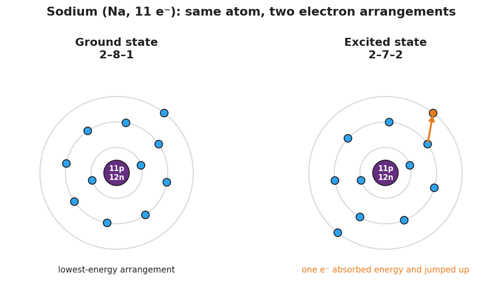

01 Phenomenon
A fireworks technician loads four gray powders into four shells. In the sky they burst in completely different colors — red, green, yellow, and blue. The firework is so hot it instantly burns up any paint or dye, so the color is not coming from a pigment. Your teacher shows the classroom version: a wood splint dipped in a different metal salt is held in the same colorless flame each time. Lithium glows red, sodium glows intense yellow-orange, copper glows blue-green, strontium glows scarlet. Same flame, same procedure — but each metal makes its own, repeatable color.
02 Driving question
Why does every element produce its own specific color of light when heated, and what does that color tell us about its electrons?
03 Notice & wonder
| I notice… | I wonder… |
|---|---|
Turn & Talk #1: The flame is colorless and exactly the same for every test, so the color must come from inside the atom. Where inside the atom — the nucleus or the electrons — would you bet the color comes from, and why?
04 Initial model
Your group rule: electrons stack into shells, and the lowest shell fills first before any electron goes higher. Shell 1 holds up to 2, shell 2 holds up to 8, shell 3 holds up to 8 (for the elements we use today).
Sodium (Na) has 11 electrons. On the lines below, write where sodium’s 11 electrons sit when they are in their lowest, calmest arrangement.
Shell 1: ____ Shell 2: ____ Shell 3: ____
Write this as a configuration (three numbers separated by dashes): _______________
Add your three numbers. Do they equal sodium’s atomic number (11)? _______________
Open the NYS Chemistry Reference Tables, find sodium, and read the configuration printed under the symbol. Does it match what you wrote? _______________
05 Investigate
Part 1 — BTC: Build it at the board
At your vertical surface (whiteboard or window), with your visibly random group, draw sodium’s lowest-energy arrangement: a nucleus in the center and the correct number of electrons on each shell. Then copy your three shell numbers here.
Sodium, lowest energy: ____ – ____ – ____
Check yourselves:
- Do the three numbers add up to 11? _______________
- Did you fill shell 1 and shell 2 completely before putting any electron in shell 3? _______________
Part 2 — Sort the configuration cards (sodium, 11 electrons)
Your group gets five cards. Sort each one into the correct column. Two rules decide every card:
- Rule 1: the digits must add up to 11 (sodium’s atomic number).
- Rule 2: the ground state fills the lowest shells first; a configuration with 11 electrons but a gap in a lower shell is an excited state; a shell that holds more than its limit is impossible.
| Card | Configuration | Sum of digits | Ground / Excited / Impossible | Why? |
|---|---|---|---|---|
| A | 2-8-1 | |||
| B | 2-7-2 | |||
| C | 2-8-2 | |||
| D | 1-8-2 | |||
| E | 2-9 |
Key question: Cards A and B both have 11 electrons, so both are sodium. What is physically different between them, and which one took energy to make?
Part 3 — Connect it to the flame
When you held the metal in the flame, you added energy. Use what you sorted to answer:
When the heat lifts an electron to a higher shell, is the atom now in its ground state or its excited state? _______________
The excited electron does not stay up — it falls back down. When it falls, does the atom absorb energy or release energy? _______________
In one sentence, what do you think the released energy has to do with the color you saw in the flame?
06 Make it make sense
For each item below, decide whether the configuration is a ground state, a valid excited state, or impossible — and explain your reasoning using the two rules. These use the same atoms (sodium, lithium, neon) you worked with in the Investigation — confirm your reasoning here.
- Sodium (Na, 11 electrons): the configuration 2-7-2.
- Sum of digits: _______________
- Ground / excited / impossible? _______________
- Reason: _______________________________________________
- Lithium (Li, 3 electrons): the configuration 1-2. (Ground state of lithium is 2-1.)
- Sum of digits: _______________
- Ground / excited / impossible? _______________
- Reason: _______________________________________________
- Neon (Ne, 10 electrons): the configuration 2-9.
- Sum of digits: _______________
- Ground / excited / impossible? _______________
- Reason: _______________________________________________
07 Key vocabulary
- ground state
- the lowest-energy arrangement of an atom's electrons, in which the lower shells are filled before any electron occupies a higher shell; this is the configuration printed in the NYS Chemistry Reference Tables (e.g., sodium = 2-8-1)
- excited state
- a higher-energy arrangement of the *same* atom in which one or more electrons have absorbed energy and jumped to a higher shell, leaving a gap in a lower shell; it has the same total number of electrons as the ground state (e.g., sodium 2-7-2) and is temporary
- photon
- a particle of light released when an excited electron falls back to a lower shell; the energy of the photon (and therefore its color) is set by the size of the energy gap the electron falls through, which is why each element emits its own characteristic color
Use each term in a sentence about today’s flame test or configuration sort. Do not copy the definition — describe something you actually did or observed.
ground state: _______________________________________________ _______________________________________________
excited state: _______________________________________________ _______________________________________________
photon: _______________________________________________ _______________________________________________
08 Revise your model
Return to the figure below and to your sorted cards.

Both panels are sodium. Prove it by counting the electrons in each: left = ____ + ____ + ____ = ____ ; right = ____ + ____ + ____ = ____.
Which panel needed energy added to it? _______________
Then finish this Because / But / So sentence:
A sodium configuration of 2-7-2 is an excited state, not the ground state, because __________________________________________, but __________________________________________, so __________________________________________.
09 Exit ticket
(a) A magnesium atom (Mg, 12 electrons) is written two ways: 2-8-2 and 2-7-3. Which is the ground state, and which is the excited state? How do you know?
Ground state: _______________ Excited state: _______________ How I know: _______________________________________________
(b) Write one valid excited-state configuration for a neutral fluorine atom (F, 9 electrons). The ground state of fluorine is 2-7.
My excited-state configuration: _______________ Why it is valid (digits add to ___ and no shell is over its limit): _______________________________________________
(c) In one sentence, explain why an electron falling from an excited state back to the ground state produces a flash of colored light.
10 Explore further
- Flame Test Lab (core hands-on): students dip a clean wood splint or nichrome loop in each metal-salt solution (LiCl, NaCl, CuCl₂, SrCl₂, KCl) and hold it in a Bunsen flame, recording the color each produces. Discussion: same flame, same procedure, different colors — what inside the atom is different? Connect each observed color to the energy of the photon released when an excited electron falls back to the ground state. (Borax-bead or colored-flame demos work as a teacher-run alternative if open flames are restricted; goggles required, hair tied back, no loose sleeves.)
- Excited-vs-ground configuration sort: students receive a stack of configuration cards (e.g., for sodium: 2-8-1, 2-7-2, 2-8-2, 1-8-2) and sort them into "ground state," "valid excited state of this atom," and "impossible / different atom." Each card is checked against two rules: total electrons = atomic number, and ground state = electrons fill the lowest shells first. Connect to `figures/sodium_ground_vs_excited.png`.
- Reference-table reading: students locate the electron configuration printed under several elements on the NYS Chemistry Reference Tables and confirm the digits sum to the atomic number.